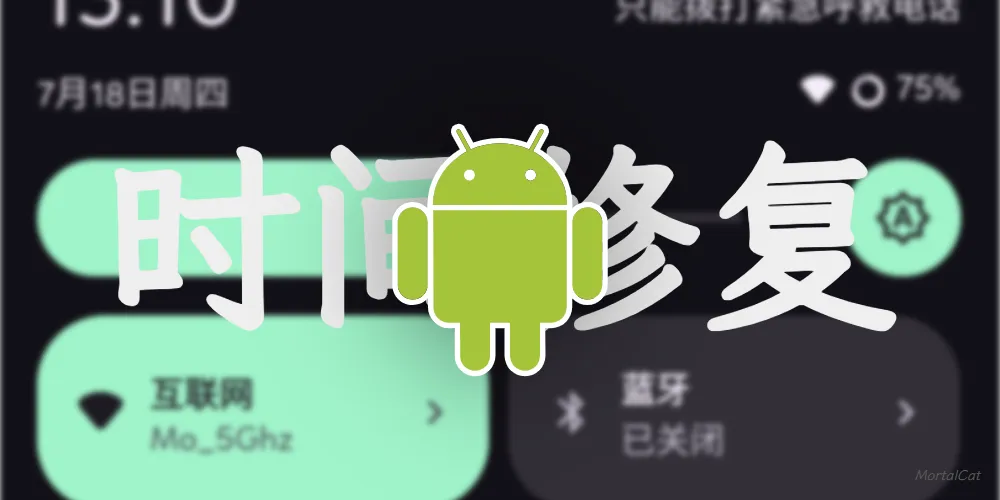

还在跟 WiFi 感叹号死磕？CaptiveMgr 快问快答
家里 WiFi 明明能上网，状态栏却挂个感叹号？CaptiveMgr 就是专门治这个的工具。整理九个快问快答，把原理、安装、使用、踩坑一次讲清。
整理一篇关于 CaptiveMgr 的快问快答——专治安卓 WiFi 感叹号那个老问题。
CaptiveMgr 到底是干嘛的？
一句话：管理安卓 Captive Portal 探测机制的工具。就是那个让你 WiFi 明明能上网却挂着感叹号的东西。
安卓系统连上 WiFi 之后，会偷偷发一个轻量的 HTTP 请求（通常是 /generate_204）去探测："这个网络会不会弹登录页？" 返回 204 就认为网络干净，返回 302 或其他码就判定需要登录——然后状态栏就给你挂个感叹号。国内 ROM 经常把这个探测服务器指向墙外，导致家里好好的 WiFi 也被误判。CaptiveMgr 干的事就是：把探测地址改成国内能通的服务器，或者干脆关掉整套探测。完整功能可以去CaptiveMgr官网看看。

WiFi 感叹号是怎么来的？
系统的网络连通性检测机制。安卓从 5.0 开始内建了这套 Captive Portal 探测，每次切换网络都会触发。探测失败不代表网络真的有问题——只是系统以为你被某个公共 WiFi 拦住了需要登录页。
国内用户被坑得特别多，因为 AOSP 默认的探测服务器里有 Google、微软这些在国内大陆不一定可达的地址。ROM 厂商会改，但改得不靠谱的情况也不少。
谁需要这个工具？
几乎所有在中国大陆用安卓的用户都有概率需要。如果你注意到过：
- 家里 WiFi 能正常上网但状态栏有感叹号
- 换了某个公共 WiFi 之后感叹号消不掉
- 刷机之后感叹号突然出现（新 ROM 的默认探测地址没配好）
这些场景 CaptiveMgr 都能解决。已经用 Shizuku 或 Magisk 玩机的用户是最直接的受益人群。
安装需要什么权限？两条路
CaptiveMgr 有两种授权方式，二选一就行。先去官方下载装起来。
root 方案：设备已经 root（Magisk、Kitsune、SuperSU 都行），首次启动会弹 root 请求，点允许、勾"记住选择"就完事了。一次授权，重启不用重新激活，功能最完整。
Shizuku 方案：没有 root 也能用。装 Shizuku 之后通过 ADB 或无线调试激活，再授权给 CaptiveMgr。功能和 root 方案一致，只是 Shizuku 每次重启后可能需要重新激活一次。
两条路覆盖了绝大部分用户。root 用户直接跳过 Shizuku 相关步骤即可。

第一次打开怎么操作？三步走
- 先测速。工具内置了小米、华为、Vivo、高通、Cloudflare、V2EX 等备选服务器，点一下测速按钮，它会逐个测延迟和返回状态。返回 204 是硬性要求，延迟越低越好。
- 选一条或两条。安卓 7.0 及以上要同时填 HTTP 和 HTTPS 两个地址（可以指向同一个服务器），7.0 以下只需要一个。
- 点应用并保存，再点刷新图标。应用写入之后不会自动触发重新探测，手动点一下刷新让系统重新跑一遍检测流程——感叹号秒消。
安卓版本不同，参数会变吗？
会，而且变化还不止一次。工具内部做了版本自动适配，你不用关心这些，但知道原理有助于排查问题，细节可以翻CaptiveMgr文档：
- Android 5.0–6.0：只有一个
captive_portal_server参数 - Android 7.0–7.1：拆成了
captive_portal_http_url+captive_portal_https_url两个 - Android 8.0+：又加了
captive_portal_mode和 HTTPS 开关相关参数
只设了 HTTP 没设 HTTPS 在安卓 7+ 上会导致感叹号依然存在——系统会同时跑两次探测，任一次失败都算整体失败。这是很多人踩过的坑。
服务器地址选哪个好？
直接上推荐优先级，从高到低：
- 小米 MIUI（
connect.rom.miui.com）——延迟低、稳定、返回干净，公认的首选 - 华为（
connectivitycheck.platform.hicloud.com）——次选备份 - Vivo 或 高通中国——前三家都不通时的替补
- Cloudflare / V2EX——上面全不行再试，效果因网络环境波动大
别凭感觉选，跑一遍内置测速工具最靠谱。测速结果会直接显示每条的延迟和返回码，204 是底线，低延迟是加分项。
和手动敲 ADB 命令比有啥优势？
手动命令是这样的：
adb shell settings put global captive_portal_http_url http://xxx/generate_204
adb shell settings put global captive_portal_https_url https://xxx/generate_204CaptiveMgr 做了三件 ADB 手动敲不了的事：
- 版本自动适配。你不用查自己设备对应的参数名是什么版本，工具运行时自动检测。
- 测速+地址管理。内置备选列表、一键测速、一键填入，省得你记 URL、开浏览器测。
- 恢复默认。想回系统默认值时，把地址栏全部留空点保存就行——不用去查不同 ROM 的默认值到底是什么。
本质上是同一套 settings global 操作，但把"查文档+敲命令+记地址"的体力活全部干掉了。
有什么坑要注意？
几个高频问题提前说清：
- Android 7+ 必须同时填 HTTP 和 HTTPS。只填一个，系统还是会跑另一个探测，感叹号消不掉。
- 应用成功但图标没变。先点刷新图标；还不行就开关一次飞行模式；再不行等系统周期性重探测（通常几分钟内）。
- Shizuku 激活失效。重启设备后 Shizuku 可能需要重新激活，这时候 CaptiveMgr 写入会失败，启动一下 Shizuku 就行。
- Magisk DenyList 干扰。如果开了 Zygisk + Enforce DenyList，确认 CaptiveMgr 不在 DenyList 里，否则 root 授权会被静默拦截。
- 恢复默认留空就行。不用记具体参数值，地址栏全部清空点保存，等于告诉系统"用你自己的默认值"。
值不值得长期装着？
值得。安装包不大、后台不跑、用完即走——但下次刷机、换 ROM、出国回来，感叹号问题大概率还会出现，这时候 CaptiveMgr 就是 30 秒解决战斗的那种工具。国内安卓用户几乎人手一把都不夸张。完整的资料和源码同步维护在GitHub、Gitee和GitCode三个平台，国内访问哪个顺手就去哪个。
最后一句：有 root 或 Shizuku 的，装上就对了；没有的，先激活 Shizuku 再装，全程不超过十分钟，换来的是再也不用盯着状态栏那个黄感叹号心烦。